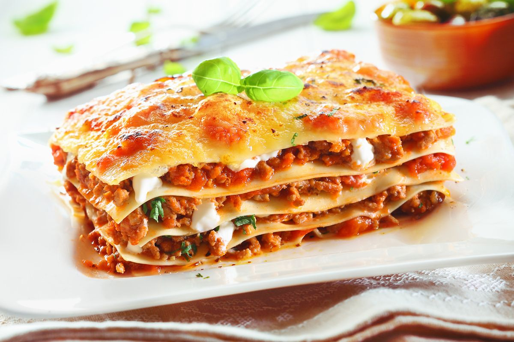

Lassagna, with one to many 's'!
serves 12 in normal day, 4 during soccer time?
Lasagna recipe that I shamelessly rip out of internet :>

help! i can't resize the pic neatly!
Ingredients
they are all in imperial 'cus Murican recipe apparently
- 3/4 pounds of Ground Beef. Lean meat is good, but expensive!
- 1 pound of sweet Italian sausages
- half cup of onion, minced. adjust amount as you like
- 2 clovesof garlic, crushed.
- BUTTER not a butter chicken if not with these, with amount adjusted to your liking!
- 28 ounces of crushed tomatoes, 6 ounces of tomato paste, and 6 ounces of tomato sauce. we need all the tomatoes boys!
- CHEESE, like all the cheese, including mozzarella, parmesan. as much as we love, until the ancestor said "cheesus weezus!"
- and some Italian spices! a wee bit too lazy to list, but hey this is HTML building practice! not cooking!
- OH, and some like 12 sheets of Lasagna Noodle. Not quite a lasagna if we only make the sauce!
Steps by steps
don't look at me, i am ripping 'em from a website.
- Make the meat sauce
- Cook the noodle
- Make the ricotta mixture
- Layer the lasagna accoring to the recipe instructions. i mean, we are the recipe, whathefun?
- Cover with foil and bake
- Let the lasagna rest before serving
Some Pro tip!
- Click on the image above to see the real recipe like a pro!
- Alternatively, just cook an instant noddle! Kappa
- JK, click the More Recipes! below to take you home and cook anything other than this nonsense!
More Recipes!